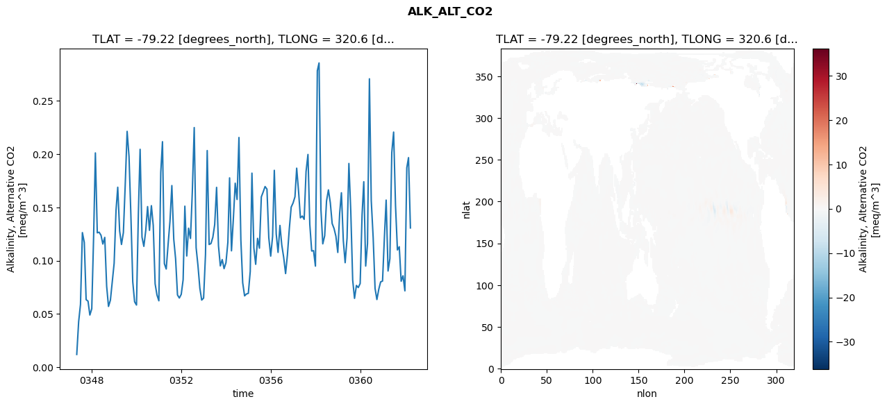
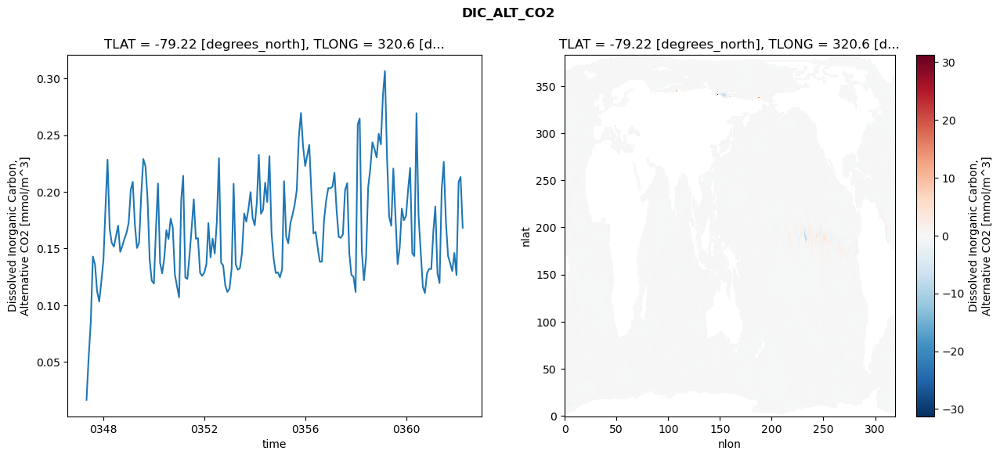
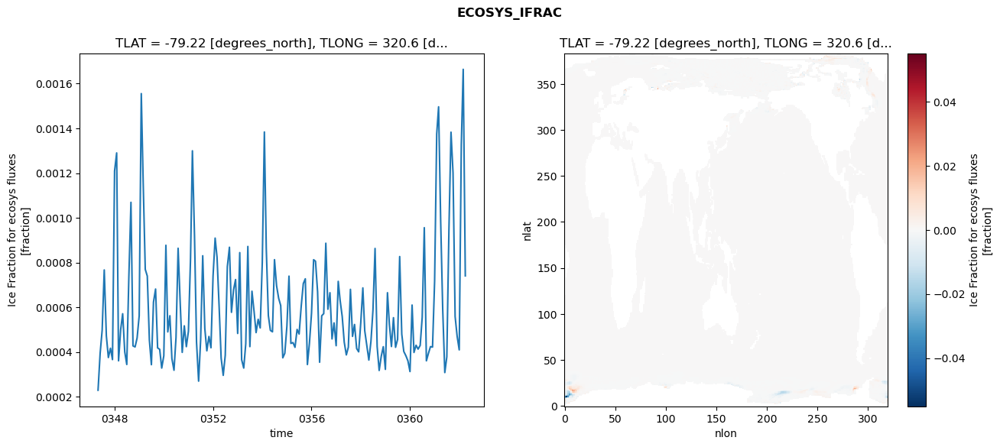
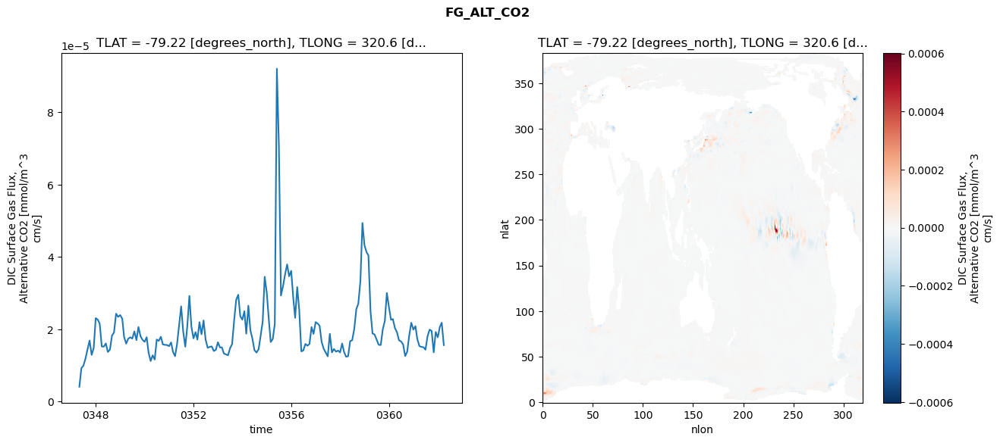

glb-dor_North_Atlantic_basin_017_1999-04-01_00069#
Simulation details#
Case: smyle.cdr-atlas-v0.glb-dor_North_Atlantic_basin_017_1999-04-01_00069.001
Basin: North_Atlantic_basin
Polygon: 17.0
Start date: 1999-04
Show code cell source Hide code cell source
import xarray as xr
import matplotlib.pyplot as plt
Show code cell source Hide code cell source
zarr_store = "/path/to/zarr/store"
# Parameters
zarr_store = "/global/cfs/projectdirs/m4746/Projects/Ocean-CDR-Atlas-v0/data/validation/smyle.cdr-atlas-v0.glb-dor_North_Atlantic_basin_017_1999-04-01_00069.001.validation.zarr"
Show code cell source Hide code cell source
%%time
ds_o = xr.open_zarr(zarr_store).compute()
ds_o
CPU times: user 701 ms, sys: 439 ms, total: 1.14 s
Wall time: 1.39 s
<xarray.Dataset> Size: 2MB
Dimensions: (nlat: 384, nlon: 320, time: 180)
Coordinates:
TLAT float64 8B -79.22
TLONG float64 8B 320.6
ULAT float64 8B -78.95
ULONG float64 8B 321.1
* time (time) object 1kB 0347-05-01 00:00:00 ... 0362-04-01 0...
z_t float32 4B 500.0
Dimensions without coordinates: nlat, nlon
Data variables:
ALK_ALT_CO2_diff (nlat, nlon) float32 492kB nan nan nan ... nan nan nan
ALK_ALT_CO2_rmse (time) float64 1kB 0.01207 0.04279 ... 0.1967 0.1307
DIC_ALT_CO2_diff (nlat, nlon) float32 492kB nan nan nan ... nan nan nan
DIC_ALT_CO2_rmse (time) float64 1kB 0.01658 0.05441 ... 0.2131 0.1683
ECOSYS_IFRAC_diff (nlat, nlon) float32 492kB nan nan nan ... nan nan nan
ECOSYS_IFRAC_rmse (time) float64 1kB 0.000229 0.0003941 ... 0.0007404
FG_ALT_CO2_diff (nlat, nlon) float32 492kB nan nan nan ... nan nan nan
FG_ALT_CO2_rmse (time) float64 1kB 4.121e-06 9.294e-06 ... 1.563e-05xarray.Dataset
- nlat: 384
- nlon: 320
- time: 180
- TLAT()float64-79.22
- long_name :
- array of t-grid latitudes
- units :
- degrees_north
array(-79.22052261)
- TLONG()float64320.6
- long_name :
- array of t-grid longitudes
- units :
- degrees_east
array(320.56250892)
- ULAT()float64-78.95
- long_name :
- array of u-grid latitudes
- units :
- degrees_north
array(-78.95289509)
- ULONG()float64321.1
- long_name :
- array of u-grid longitudes
- units :
- degrees_east
array(321.12500894)
- time(time)object0347-05-01 00:00:00 ... 0362-04-...
- bounds :
- time_bound
- long_name :
- time
array([cftime.DatetimeNoLeap(347, 5, 1, 0, 0, 0, 0, has_year_zero=True), cftime.DatetimeNoLeap(347, 6, 1, 0, 0, 0, 0, has_year_zero=True), cftime.DatetimeNoLeap(347, 7, 1, 0, 0, 0, 0, has_year_zero=True), cftime.DatetimeNoLeap(347, 8, 1, 0, 0, 0, 0, has_year_zero=True), cftime.DatetimeNoLeap(347, 9, 1, 0, 0, 0, 0, has_year_zero=True), cftime.DatetimeNoLeap(347, 10, 1, 0, 0, 0, 0, has_year_zero=True), cftime.DatetimeNoLeap(347, 11, 1, 0, 0, 0, 0, has_year_zero=True), cftime.DatetimeNoLeap(347, 12, 1, 0, 0, 0, 0, has_year_zero=True), cftime.DatetimeNoLeap(348, 1, 1, 0, 0, 0, 0, has_year_zero=True), cftime.DatetimeNoLeap(348, 2, 1, 0, 0, 0, 0, has_year_zero=True), cftime.DatetimeNoLeap(348, 3, 1, 0, 0, 0, 0, has_year_zero=True), cftime.DatetimeNoLeap(348, 4, 1, 0, 0, 0, 0, has_year_zero=True), cftime.DatetimeNoLeap(348, 5, 1, 0, 0, 0, 0, has_year_zero=True), cftime.DatetimeNoLeap(348, 6, 1, 0, 0, 0, 0, has_year_zero=True), cftime.DatetimeNoLeap(348, 7, 1, 0, 0, 0, 0, has_year_zero=True), cftime.DatetimeNoLeap(348, 8, 1, 0, 0, 0, 0, has_year_zero=True), cftime.DatetimeNoLeap(348, 9, 1, 0, 0, 0, 0, has_year_zero=True), cftime.DatetimeNoLeap(348, 10, 1, 0, 0, 0, 0, has_year_zero=True), cftime.DatetimeNoLeap(348, 11, 1, 0, 0, 0, 0, has_year_zero=True), cftime.DatetimeNoLeap(348, 12, 1, 0, 0, 0, 0, has_year_zero=True), cftime.DatetimeNoLeap(349, 1, 1, 0, 0, 0, 0, has_year_zero=True), cftime.DatetimeNoLeap(349, 2, 1, 0, 0, 0, 0, has_year_zero=True), cftime.DatetimeNoLeap(349, 3, 1, 0, 0, 0, 0, has_year_zero=True), cftime.DatetimeNoLeap(349, 4, 1, 0, 0, 0, 0, has_year_zero=True), cftime.DatetimeNoLeap(349, 5, 1, 0, 0, 0, 0, has_year_zero=True), cftime.DatetimeNoLeap(349, 6, 1, 0, 0, 0, 0, has_year_zero=True), cftime.DatetimeNoLeap(349, 7, 1, 0, 0, 0, 0, has_year_zero=True), cftime.DatetimeNoLeap(349, 8, 1, 0, 0, 0, 0, has_year_zero=True), cftime.DatetimeNoLeap(349, 9, 1, 0, 0, 0, 0, has_year_zero=True), cftime.DatetimeNoLeap(349, 10, 1, 0, 0, 0, 0, has_year_zero=True), cftime.DatetimeNoLeap(349, 11, 1, 0, 0, 0, 0, has_year_zero=True), cftime.DatetimeNoLeap(349, 12, 1, 0, 0, 0, 0, has_year_zero=True), cftime.DatetimeNoLeap(350, 1, 1, 0, 0, 0, 0, has_year_zero=True), cftime.DatetimeNoLeap(350, 2, 1, 0, 0, 0, 0, has_year_zero=True), cftime.DatetimeNoLeap(350, 3, 1, 0, 0, 0, 0, has_year_zero=True), cftime.DatetimeNoLeap(350, 4, 1, 0, 0, 0, 0, has_year_zero=True), cftime.DatetimeNoLeap(350, 5, 1, 0, 0, 0, 0, has_year_zero=True), cftime.DatetimeNoLeap(350, 6, 1, 0, 0, 0, 0, has_year_zero=True), cftime.DatetimeNoLeap(350, 7, 1, 0, 0, 0, 0, has_year_zero=True), cftime.DatetimeNoLeap(350, 8, 1, 0, 0, 0, 0, has_year_zero=True), cftime.DatetimeNoLeap(350, 9, 1, 0, 0, 0, 0, has_year_zero=True), cftime.DatetimeNoLeap(350, 10, 1, 0, 0, 0, 0, has_year_zero=True), cftime.DatetimeNoLeap(350, 11, 1, 0, 0, 0, 0, has_year_zero=True), cftime.DatetimeNoLeap(350, 12, 1, 0, 0, 0, 0, has_year_zero=True), cftime.DatetimeNoLeap(351, 1, 1, 0, 0, 0, 0, has_year_zero=True), cftime.DatetimeNoLeap(351, 2, 1, 0, 0, 0, 0, has_year_zero=True), cftime.DatetimeNoLeap(351, 3, 1, 0, 0, 0, 0, has_year_zero=True), cftime.DatetimeNoLeap(351, 4, 1, 0, 0, 0, 0, has_year_zero=True), cftime.DatetimeNoLeap(351, 5, 1, 0, 0, 0, 0, has_year_zero=True), cftime.DatetimeNoLeap(351, 6, 1, 0, 0, 0, 0, has_year_zero=True), cftime.DatetimeNoLeap(351, 7, 1, 0, 0, 0, 0, has_year_zero=True), cftime.DatetimeNoLeap(351, 8, 1, 0, 0, 0, 0, has_year_zero=True), cftime.DatetimeNoLeap(351, 9, 1, 0, 0, 0, 0, has_year_zero=True), cftime.DatetimeNoLeap(351, 10, 1, 0, 0, 0, 0, has_year_zero=True), cftime.DatetimeNoLeap(351, 11, 1, 0, 0, 0, 0, has_year_zero=True), cftime.DatetimeNoLeap(351, 12, 1, 0, 0, 0, 0, has_year_zero=True), cftime.DatetimeNoLeap(352, 1, 1, 0, 0, 0, 0, has_year_zero=True), cftime.DatetimeNoLeap(352, 2, 1, 0, 0, 0, 0, has_year_zero=True), cftime.DatetimeNoLeap(352, 3, 1, 0, 0, 0, 0, has_year_zero=True), cftime.DatetimeNoLeap(352, 4, 1, 0, 0, 0, 0, has_year_zero=True), cftime.DatetimeNoLeap(352, 5, 1, 0, 0, 0, 0, has_year_zero=True), cftime.DatetimeNoLeap(352, 6, 1, 0, 0, 0, 0, has_year_zero=True), cftime.DatetimeNoLeap(352, 7, 1, 0, 0, 0, 0, has_year_zero=True), cftime.DatetimeNoLeap(352, 8, 1, 0, 0, 0, 0, has_year_zero=True), cftime.DatetimeNoLeap(352, 9, 1, 0, 0, 0, 0, has_year_zero=True), cftime.DatetimeNoLeap(352, 10, 1, 0, 0, 0, 0, has_year_zero=True), cftime.DatetimeNoLeap(352, 11, 1, 0, 0, 0, 0, has_year_zero=True), cftime.DatetimeNoLeap(352, 12, 1, 0, 0, 0, 0, has_year_zero=True), cftime.DatetimeNoLeap(353, 1, 1, 0, 0, 0, 0, has_year_zero=True), cftime.DatetimeNoLeap(353, 2, 1, 0, 0, 0, 0, has_year_zero=True), cftime.DatetimeNoLeap(353, 3, 1, 0, 0, 0, 0, has_year_zero=True), cftime.DatetimeNoLeap(353, 4, 1, 0, 0, 0, 0, has_year_zero=True), cftime.DatetimeNoLeap(353, 5, 1, 0, 0, 0, 0, has_year_zero=True), cftime.DatetimeNoLeap(353, 6, 1, 0, 0, 0, 0, has_year_zero=True), cftime.DatetimeNoLeap(353, 7, 1, 0, 0, 0, 0, has_year_zero=True), cftime.DatetimeNoLeap(353, 8, 1, 0, 0, 0, 0, has_year_zero=True), cftime.DatetimeNoLeap(353, 9, 1, 0, 0, 0, 0, has_year_zero=True), cftime.DatetimeNoLeap(353, 10, 1, 0, 0, 0, 0, has_year_zero=True), cftime.DatetimeNoLeap(353, 11, 1, 0, 0, 0, 0, has_year_zero=True), cftime.DatetimeNoLeap(353, 12, 1, 0, 0, 0, 0, has_year_zero=True), cftime.DatetimeNoLeap(354, 1, 1, 0, 0, 0, 0, has_year_zero=True), cftime.DatetimeNoLeap(354, 2, 1, 0, 0, 0, 0, has_year_zero=True), cftime.DatetimeNoLeap(354, 3, 1, 0, 0, 0, 0, has_year_zero=True), cftime.DatetimeNoLeap(354, 4, 1, 0, 0, 0, 0, has_year_zero=True), cftime.DatetimeNoLeap(354, 5, 1, 0, 0, 0, 0, has_year_zero=True), cftime.DatetimeNoLeap(354, 6, 1, 0, 0, 0, 0, has_year_zero=True), cftime.DatetimeNoLeap(354, 7, 1, 0, 0, 0, 0, has_year_zero=True), cftime.DatetimeNoLeap(354, 8, 1, 0, 0, 0, 0, has_year_zero=True), cftime.DatetimeNoLeap(354, 9, 1, 0, 0, 0, 0, has_year_zero=True), cftime.DatetimeNoLeap(354, 10, 1, 0, 0, 0, 0, has_year_zero=True), cftime.DatetimeNoLeap(354, 11, 1, 0, 0, 0, 0, has_year_zero=True), cftime.DatetimeNoLeap(354, 12, 1, 0, 0, 0, 0, has_year_zero=True), cftime.DatetimeNoLeap(355, 1, 1, 0, 0, 0, 0, has_year_zero=True), cftime.DatetimeNoLeap(355, 2, 1, 0, 0, 0, 0, has_year_zero=True), cftime.DatetimeNoLeap(355, 3, 1, 0, 0, 0, 0, has_year_zero=True), cftime.DatetimeNoLeap(355, 4, 1, 0, 0, 0, 0, has_year_zero=True), cftime.DatetimeNoLeap(355, 5, 1, 0, 0, 0, 0, has_year_zero=True), cftime.DatetimeNoLeap(355, 6, 1, 0, 0, 0, 0, has_year_zero=True), cftime.DatetimeNoLeap(355, 7, 1, 0, 0, 0, 0, has_year_zero=True), cftime.DatetimeNoLeap(355, 8, 1, 0, 0, 0, 0, has_year_zero=True), cftime.DatetimeNoLeap(355, 9, 1, 0, 0, 0, 0, has_year_zero=True), cftime.DatetimeNoLeap(355, 10, 1, 0, 0, 0, 0, has_year_zero=True), cftime.DatetimeNoLeap(355, 11, 1, 0, 0, 0, 0, has_year_zero=True), cftime.DatetimeNoLeap(355, 12, 1, 0, 0, 0, 0, has_year_zero=True), cftime.DatetimeNoLeap(356, 1, 1, 0, 0, 0, 0, has_year_zero=True), cftime.DatetimeNoLeap(356, 2, 1, 0, 0, 0, 0, has_year_zero=True), cftime.DatetimeNoLeap(356, 3, 1, 0, 0, 0, 0, has_year_zero=True), cftime.DatetimeNoLeap(356, 4, 1, 0, 0, 0, 0, has_year_zero=True), cftime.DatetimeNoLeap(356, 5, 1, 0, 0, 0, 0, has_year_zero=True), cftime.DatetimeNoLeap(356, 6, 1, 0, 0, 0, 0, has_year_zero=True), cftime.DatetimeNoLeap(356, 7, 1, 0, 0, 0, 0, has_year_zero=True), cftime.DatetimeNoLeap(356, 8, 1, 0, 0, 0, 0, has_year_zero=True), cftime.DatetimeNoLeap(356, 9, 1, 0, 0, 0, 0, has_year_zero=True), cftime.DatetimeNoLeap(356, 10, 1, 0, 0, 0, 0, has_year_zero=True), cftime.DatetimeNoLeap(356, 11, 1, 0, 0, 0, 0, has_year_zero=True), cftime.DatetimeNoLeap(356, 12, 1, 0, 0, 0, 0, has_year_zero=True), cftime.DatetimeNoLeap(357, 1, 1, 0, 0, 0, 0, has_year_zero=True), cftime.DatetimeNoLeap(357, 2, 1, 0, 0, 0, 0, has_year_zero=True), cftime.DatetimeNoLeap(357, 3, 1, 0, 0, 0, 0, has_year_zero=True), cftime.DatetimeNoLeap(357, 4, 1, 0, 0, 0, 0, has_year_zero=True), cftime.DatetimeNoLeap(357, 5, 1, 0, 0, 0, 0, has_year_zero=True), cftime.DatetimeNoLeap(357, 6, 1, 0, 0, 0, 0, has_year_zero=True), cftime.DatetimeNoLeap(357, 7, 1, 0, 0, 0, 0, has_year_zero=True), cftime.DatetimeNoLeap(357, 8, 1, 0, 0, 0, 0, has_year_zero=True), cftime.DatetimeNoLeap(357, 9, 1, 0, 0, 0, 0, has_year_zero=True), cftime.DatetimeNoLeap(357, 10, 1, 0, 0, 0, 0, has_year_zero=True), cftime.DatetimeNoLeap(357, 11, 1, 0, 0, 0, 0, has_year_zero=True), cftime.DatetimeNoLeap(357, 12, 1, 0, 0, 0, 0, has_year_zero=True), cftime.DatetimeNoLeap(358, 1, 1, 0, 0, 0, 0, has_year_zero=True), cftime.DatetimeNoLeap(358, 2, 1, 0, 0, 0, 0, has_year_zero=True), cftime.DatetimeNoLeap(358, 3, 1, 0, 0, 0, 0, has_year_zero=True), cftime.DatetimeNoLeap(358, 4, 1, 0, 0, 0, 0, has_year_zero=True), cftime.DatetimeNoLeap(358, 5, 1, 0, 0, 0, 0, has_year_zero=True), cftime.DatetimeNoLeap(358, 6, 1, 0, 0, 0, 0, has_year_zero=True), cftime.DatetimeNoLeap(358, 7, 1, 0, 0, 0, 0, has_year_zero=True), cftime.DatetimeNoLeap(358, 8, 1, 0, 0, 0, 0, has_year_zero=True), cftime.DatetimeNoLeap(358, 9, 1, 0, 0, 0, 0, has_year_zero=True), cftime.DatetimeNoLeap(358, 10, 1, 0, 0, 0, 0, has_year_zero=True), cftime.DatetimeNoLeap(358, 11, 1, 0, 0, 0, 0, has_year_zero=True), cftime.DatetimeNoLeap(358, 12, 1, 0, 0, 0, 0, has_year_zero=True), cftime.DatetimeNoLeap(359, 1, 1, 0, 0, 0, 0, has_year_zero=True), cftime.DatetimeNoLeap(359, 2, 1, 0, 0, 0, 0, has_year_zero=True), cftime.DatetimeNoLeap(359, 3, 1, 0, 0, 0, 0, has_year_zero=True), cftime.DatetimeNoLeap(359, 4, 1, 0, 0, 0, 0, has_year_zero=True), cftime.DatetimeNoLeap(359, 5, 1, 0, 0, 0, 0, has_year_zero=True), cftime.DatetimeNoLeap(359, 6, 1, 0, 0, 0, 0, has_year_zero=True), cftime.DatetimeNoLeap(359, 7, 1, 0, 0, 0, 0, has_year_zero=True), cftime.DatetimeNoLeap(359, 8, 1, 0, 0, 0, 0, has_year_zero=True), cftime.DatetimeNoLeap(359, 9, 1, 0, 0, 0, 0, has_year_zero=True), cftime.DatetimeNoLeap(359, 10, 1, 0, 0, 0, 0, has_year_zero=True), cftime.DatetimeNoLeap(359, 11, 1, 0, 0, 0, 0, has_year_zero=True), cftime.DatetimeNoLeap(359, 12, 1, 0, 0, 0, 0, has_year_zero=True), cftime.DatetimeNoLeap(360, 1, 1, 0, 0, 0, 0, has_year_zero=True), cftime.DatetimeNoLeap(360, 2, 1, 0, 0, 0, 0, has_year_zero=True), cftime.DatetimeNoLeap(360, 3, 1, 0, 0, 0, 0, has_year_zero=True), cftime.DatetimeNoLeap(360, 4, 1, 0, 0, 0, 0, has_year_zero=True), cftime.DatetimeNoLeap(360, 5, 1, 0, 0, 0, 0, has_year_zero=True), cftime.DatetimeNoLeap(360, 6, 1, 0, 0, 0, 0, has_year_zero=True), cftime.DatetimeNoLeap(360, 7, 1, 0, 0, 0, 0, has_year_zero=True), cftime.DatetimeNoLeap(360, 8, 1, 0, 0, 0, 0, has_year_zero=True), cftime.DatetimeNoLeap(360, 9, 1, 0, 0, 0, 0, has_year_zero=True), cftime.DatetimeNoLeap(360, 10, 1, 0, 0, 0, 0, has_year_zero=True), cftime.DatetimeNoLeap(360, 11, 1, 0, 0, 0, 0, has_year_zero=True), cftime.DatetimeNoLeap(360, 12, 1, 0, 0, 0, 0, has_year_zero=True), cftime.DatetimeNoLeap(361, 1, 1, 0, 0, 0, 0, has_year_zero=True), cftime.DatetimeNoLeap(361, 2, 1, 0, 0, 0, 0, has_year_zero=True), cftime.DatetimeNoLeap(361, 3, 1, 0, 0, 0, 0, has_year_zero=True), cftime.DatetimeNoLeap(361, 4, 1, 0, 0, 0, 0, has_year_zero=True), cftime.DatetimeNoLeap(361, 5, 1, 0, 0, 0, 0, has_year_zero=True), cftime.DatetimeNoLeap(361, 6, 1, 0, 0, 0, 0, has_year_zero=True), cftime.DatetimeNoLeap(361, 7, 1, 0, 0, 0, 0, has_year_zero=True), cftime.DatetimeNoLeap(361, 8, 1, 0, 0, 0, 0, has_year_zero=True), cftime.DatetimeNoLeap(361, 9, 1, 0, 0, 0, 0, has_year_zero=True), cftime.DatetimeNoLeap(361, 10, 1, 0, 0, 0, 0, has_year_zero=True), cftime.DatetimeNoLeap(361, 11, 1, 0, 0, 0, 0, has_year_zero=True), cftime.DatetimeNoLeap(361, 12, 1, 0, 0, 0, 0, has_year_zero=True), cftime.DatetimeNoLeap(362, 1, 1, 0, 0, 0, 0, has_year_zero=True), cftime.DatetimeNoLeap(362, 2, 1, 0, 0, 0, 0, has_year_zero=True), cftime.DatetimeNoLeap(362, 3, 1, 0, 0, 0, 0, has_year_zero=True), cftime.DatetimeNoLeap(362, 4, 1, 0, 0, 0, 0, has_year_zero=True)], dtype=object) - z_t()float32500.0
- long_name :
- depth from surface to midpoint of layer
- positive :
- down
- units :
- centimeters
- valid_max :
- 537500.0
- valid_min :
- 500.0
array(500., dtype=float32)
- ALK_ALT_CO2_diff(nlat, nlon)float32nan nan nan nan ... nan nan nan nan
- cell_methods :
- time: mean
- grid_loc :
- 3111
- long_name :
- Alkalinity, Alternative CO2
- units :
- meq/m^3
array([[ nan, nan, nan, ..., nan, nan, nan], [ nan, nan, nan, ..., nan, nan, nan], [-0.02661133, -0.01635742, -0.00585938, ..., nan, nan, nan], ..., [ nan, nan, nan, ..., nan, nan, nan], [ nan, nan, nan, ..., nan, nan, nan], [ nan, nan, nan, ..., nan, nan, nan]], dtype=float32) - ALK_ALT_CO2_rmse(time)float640.01207 0.04279 ... 0.1967 0.1307
- cell_methods :
- time: mean
- grid_loc :
- 3111
- long_name :
- Alkalinity, Alternative CO2
- units :
- meq/m^3
array([0.01207005, 0.04279129, 0.05902148, 0.12638316, 0.11717932, 0.06347294, 0.06208589, 0.04904735, 0.05494555, 0.12443432, 0.20113742, 0.1261958 , 0.12676786, 0.12387514, 0.11565212, 0.12189133, 0.07611865, 0.057113 , 0.06293885, 0.07998912, 0.09752294, 0.14741397, 0.16893272, 0.12790592, 0.11526542, 0.12639994, 0.17115989, 0.22137034, 0.19777033, 0.14345055, 0.08024763, 0.06148929, 0.05842457, 0.1451445 , 0.20452241, 0.12209925, 0.11350193, 0.12839556, 0.15078648, 0.12851085, 0.15164306, 0.13330648, 0.0783552 , 0.06785841, 0.06242969, 0.18295585, 0.21167028, 0.0972738 , 0.09221965, 0.11552989, 0.13684668, 0.17050894, 0.12021924, 0.1018777 , 0.06790554, 0.0650167 , 0.0684373 , 0.08217628, 0.15117681, 0.10444777, 0.13050618, 0.12089985, 0.16469091, 0.22492845, 0.11227864, 0.09548646, 0.07422995, 0.06310433, 0.06494962, 0.10589099, 0.20334894, 0.11523869, 0.11611068, 0.12201763, 0.13384302, 0.16882019, 0.11394217, 0.09513126, 0.101067 , 0.09259234, 0.09815739, 0.1172774 , 0.17773434, 0.10929655, 0.13865192, 0.17272972, 0.15746191, 0.21561543, 0.11967063, 0.07931835, 0.06704174, 0.06879713, 0.06939142, 0.0899466 , 0.18216953, 0.11209071, 0.09665165, 0.12098924, 0.11178254, 0.1598946 , 0.16461166, 0.16960026, 0.16715615, 0.12159374, 0.10434362, 0.12278852, 0.18481491, 0.1252282 , 0.1078307 , 0.13309214, 0.11459683, 0.10313014, 0.08795812, 0.10559461, 0.13018305, 0.15027451, 0.15416952, 0.15997524, 0.18682671, 0.164864 , 0.14022839, 0.14195202, 0.13883688, 0.1836418 , 0.19969588, 0.13414398, 0.10913347, 0.10946825, 0.09494633, 0.27828561, 0.28554252, 0.14795175, 0.1158476 , 0.12341491, 0.15603448, 0.1664476 , 0.15429734, 0.13486402, 0.13019105, 0.12300153, 0.10777089, 0.14493078, 0.16374862, 0.11890235, 0.09817054, 0.12119818, 0.19124169, 0.145977 , 0.08175464, 0.06470683, 0.07679452, 0.07483747, 0.07861582, 0.14283002, 0.17412209, 0.09500105, 0.11614887, 0.27068322, 0.15629525, 0.12191188, 0.07405252, 0.06358563, 0.07332083, 0.08017054, 0.08091824, 0.12263182, 0.15687842, 0.09036741, 0.10195253, 0.20155465, 0.22069248, 0.15157045, 0.11009029, 0.11313279, 0.08074545, 0.08588441, 0.07173607, 0.18724924, 0.19671973, 0.13074582]) - DIC_ALT_CO2_diff(nlat, nlon)float32nan nan nan nan ... nan nan nan nan
- cell_methods :
- time: mean
- grid_loc :
- 3111
- long_name :
- Dissolved Inorganic Carbon, Alternative CO2
- units :
- mmol/m^3
array([[ nan, nan, nan, ..., nan, nan, nan], [ nan, nan, nan, ..., nan, nan, nan], [-0.06103516, -0.04223633, -0.01538086, ..., nan, nan, nan], ..., [ nan, nan, nan, ..., nan, nan, nan], [ nan, nan, nan, ..., nan, nan, nan], [ nan, nan, nan, ..., nan, nan, nan]], dtype=float32) - DIC_ALT_CO2_rmse(time)float640.01658 0.05441 ... 0.2131 0.1683
- cell_methods :
- time: mean
- grid_loc :
- 3111
- long_name :
- Dissolved Inorganic Carbon, Alternative CO2
- units :
- mmol/m^3
array([0.01657679, 0.05440789, 0.08462587, 0.14295052, 0.13581557, 0.11231852, 0.10330219, 0.12057286, 0.14024946, 0.18834282, 0.22834641, 0.16735257, 0.15507183, 0.15166568, 0.1607228 , 0.17012989, 0.14707088, 0.15221837, 0.15863053, 0.16387241, 0.17270644, 0.20204996, 0.20880651, 0.17121069, 0.15046664, 0.15526802, 0.19653561, 0.22893159, 0.22250644, 0.19458316, 0.14014539, 0.12163978, 0.11912142, 0.16862575, 0.2073426 , 0.13732823, 0.12813473, 0.14183451, 0.16612051, 0.15833979, 0.17648375, 0.16843462, 0.12692927, 0.11689467, 0.10702918, 0.19332432, 0.21413221, 0.12446414, 0.12316398, 0.14406842, 0.16752127, 0.19336544, 0.15857858, 0.15916152, 0.12845033, 0.12587349, 0.12883584, 0.13640928, 0.17240266, 0.14212468, 0.15874429, 0.14560874, 0.17356844, 0.22965663, 0.13750849, 0.13504125, 0.11727834, 0.11169234, 0.11472503, 0.13266305, 0.20710896, 0.13567806, 0.13127629, 0.13279284, 0.14640752, 0.18082692, 0.17367261, 0.18461216, 0.1997303 , 0.1768623 , 0.17038596, 0.19123686, 0.23252739, 0.18059294, 0.18423393, 0.20807922, 0.19096045, 0.23146156, 0.16340021, 0.14132844, 0.12834186, 0.12908302, 0.12461277, 0.13162855, 0.20935809, 0.16049153, 0.15454702, 0.17223182, 0.17953279, 0.1883414 , 0.20141304, 0.24867321, 0.26951262, 0.24042117, 0.2227878 , 0.232719 , 0.24135636, 0.19875722, 0.16328269, 0.16464772, 0.15078362, 0.13826463, 0.13838792, 0.17518003, 0.19257196, 0.20323255, 0.20316788, 0.2046709 , 0.21681016, 0.1833832 , 0.16032541, 0.15937317, 0.16251792, 0.20139408, 0.20759816, 0.14618886, 0.12668985, 0.12518592, 0.11168501, 0.25950269, 0.26458554, 0.14759488, 0.12200807, 0.14141673, 0.20350487, 0.22028649, 0.24364433, 0.23785494, 0.23025569, 0.25109637, 0.2419154 , 0.28582208, 0.30648977, 0.2297493 , 0.17836261, 0.17005578, 0.2205301 , 0.17853954, 0.1361764 , 0.15071718, 0.18514801, 0.17493526, 0.17891551, 0.20272998, 0.22114479, 0.14592746, 0.14337887, 0.26937058, 0.17883935, 0.14716816, 0.11620734, 0.11075593, 0.12822296, 0.13209336, 0.13183376, 0.16590947, 0.18705302, 0.1280976 , 0.11956929, 0.20207807, 0.22645026, 0.1736016 , 0.14345161, 0.13710394, 0.13014525, 0.1460371 , 0.126544 , 0.20877825, 0.21309911, 0.16834201]) - ECOSYS_IFRAC_diff(nlat, nlon)float32nan nan nan nan ... nan nan nan nan
- cell_methods :
- time: mean
- grid_loc :
- 2110
- long_name :
- Ice Fraction for ecosys fluxes
- units :
- fraction
array([[ nan, nan, nan, ..., nan, nan, nan], [ nan, nan, nan, ..., nan, nan, nan], [-0.00017226, 0.00054735, -0.00134504, ..., nan, nan, nan], ..., [ nan, nan, nan, ..., nan, nan, nan], [ nan, nan, nan, ..., nan, nan, nan], [ nan, nan, nan, ..., nan, nan, nan]], dtype=float32) - ECOSYS_IFRAC_rmse(time)float640.000229 0.0003941 ... 0.0007404
- cell_methods :
- time: mean
- grid_loc :
- 2110
- long_name :
- Ice Fraction for ecosys fluxes
- units :
- fraction
array([0.00022903, 0.00039413, 0.00049733, 0.00076693, 0.00047286, 0.00037538, 0.00041696, 0.00036619, 0.00120941, 0.00129025, 0.00036069, 0.00049913, 0.0005711 , 0.0004006 , 0.00034424, 0.00073911, 0.00106937, 0.00042747, 0.00042271, 0.00046253, 0.0005619 , 0.00155551, 0.00116112, 0.00076953, 0.00073977, 0.00045394, 0.00034335, 0.00062355, 0.00068158, 0.00041839, 0.000412 , 0.00032825, 0.00038314, 0.00087721, 0.00048994, 0.00056223, 0.00037031, 0.00031849, 0.00046505, 0.00086383, 0.00061945, 0.00039841, 0.00051703, 0.00042399, 0.00049271, 0.0008168 , 0.00129967, 0.00092124, 0.00044421, 0.00026978, 0.0004542 , 0.00083042, 0.0005048 , 0.00040538, 0.00046947, 0.00041909, 0.0007398 , 0.0009093 , 0.00082434, 0.00060412, 0.00037296, 0.00029566, 0.00038575, 0.00078205, 0.0008684 , 0.00057747, 0.00067831, 0.00072404, 0.00048303, 0.00084444, 0.00036552, 0.00032836, 0.00043699, 0.00087201, 0.0004241 , 0.00067185, 0.00058217, 0.0004868 , 0.00054626, 0.00050774, 0.0008016 , 0.00138396, 0.00086424, 0.00056292, 0.0004968 , 0.00049029, 0.00081296, 0.00069604, 0.00063998, 0.00060788, 0.00037396, 0.00039449, 0.00051564, 0.00073926, 0.00043845, 0.00044203, 0.00042093, 0.00050098, 0.00048032, 0.00060432, 0.00070585, 0.00072743, 0.00034398, 0.00043908, 0.00057358, 0.00081276, 0.00080594, 0.00066904, 0.00035425, 0.0005619 , 0.00057161, 0.00088639, 0.0005913 , 0.00066512, 0.00045849, 0.00053011, 0.00042827, 0.00071592, 0.00063086, 0.00055884, 0.00044416, 0.00038701, 0.00042151, 0.00068021, 0.00046986, 0.00052307, 0.00041549, 0.00040079, 0.00053061, 0.00068667, 0.00049527, 0.00042949, 0.00036406, 0.00044729, 0.00058768, 0.00086308, 0.00042474, 0.00031753, 0.0003814 , 0.00042364, 0.00032245, 0.00066516, 0.00052489, 0.00042455, 0.00055345, 0.00042109, 0.00045608, 0.00082686, 0.00047997, 0.00040243, 0.00038332, 0.00036072, 0.00031264, 0.00061003, 0.00039806, 0.00043017, 0.00041299, 0.00042947, 0.00055518, 0.00095591, 0.00036069, 0.00039359, 0.00042409, 0.00042197, 0.00071685, 0.00137483, 0.00149637, 0.00098288, 0.00059176, 0.00030812, 0.00037871, 0.00094314, 0.00138297, 0.00120127, 0.00055877, 0.00047024, 0.00040956, 0.00132899, 0.00166408, 0.00074039]) - FG_ALT_CO2_diff(nlat, nlon)float32nan nan nan nan ... nan nan nan nan
- cell_methods :
- time: mean
- grid_loc :
- 2110
- long_name :
- DIC Surface Gas Flux, Alternative CO2
- units :
- mmol/m^3 cm/s
array([[ nan, nan, nan, ..., nan, nan, nan], [ nan, nan, nan, ..., nan, nan, nan], [ 2.7733477e-06, -2.1619489e-06, 7.0981332e-06, ..., nan, nan, nan], ..., [ nan, nan, nan, ..., nan, nan, nan], [ nan, nan, nan, ..., nan, nan, nan], [ nan, nan, nan, ..., nan, nan, nan]], dtype=float32) - FG_ALT_CO2_rmse(time)float644.121e-06 9.294e-06 ... 1.563e-05
- cell_methods :
- time: mean
- grid_loc :
- 2110
- long_name :
- DIC Surface Gas Flux, Alternative CO2
- units :
- mmol/m^3 cm/s
array([4.12087406e-06, 9.29350239e-06, 9.96802818e-06, 1.19266336e-05, 1.45195792e-05, 1.68958536e-05, 1.29129318e-05, 1.47386439e-05, 2.30934501e-05, 2.26396105e-05, 2.15670635e-05, 1.52461918e-05, 1.52091216e-05, 1.60825571e-05, 1.37334161e-05, 1.43774838e-05, 1.82770218e-05, 1.91265511e-05, 2.43214471e-05, 2.34321754e-05, 2.39311605e-05, 2.29372461e-05, 1.78603549e-05, 1.60513055e-05, 1.73937875e-05, 1.77853426e-05, 1.74321151e-05, 1.94212598e-05, 1.69996794e-05, 2.06372608e-05, 1.80854764e-05, 1.70917738e-05, 1.65235525e-05, 1.78203209e-05, 1.35810785e-05, 1.12266207e-05, 1.28104562e-05, 1.16462744e-05, 1.71731630e-05, 1.68100459e-05, 1.79360075e-05, 1.58196081e-05, 1.57022027e-05, 1.56598912e-05, 1.53303376e-05, 1.63717413e-05, 1.37752370e-05, 1.25660289e-05, 1.59369398e-05, 2.11740017e-05, 2.63415037e-05, 1.93122636e-05, 1.51825757e-05, 2.09178488e-05, 2.92326956e-05, 2.07370630e-05, 1.75004335e-05, 1.92132733e-05, 1.71501701e-05, 2.19712471e-05, 1.86206195e-05, 2.24400288e-05, 1.71976588e-05, 1.48863029e-05, 1.51504359e-05, 1.52671319e-05, 1.39932947e-05, 1.43245290e-05, 1.64089571e-05, 1.49865891e-05, 1.50198523e-05, 1.32892957e-05, 1.30821314e-05, 1.28092426e-05, 1.47428329e-05, 1.58724927e-05, 2.25057082e-05, 2.81390245e-05, 2.95433958e-05, 2.36517843e-05, ... 3.19317403e-05, 3.51235457e-05, 3.79323987e-05, 3.46475755e-05, 3.61541071e-05, 2.86533030e-05, 2.31556292e-05, 3.16754664e-05, 2.53826953e-05, 1.39060492e-05, 1.41556692e-05, 1.59461157e-05, 1.54750724e-05, 1.59497859e-05, 2.06147110e-05, 1.87191774e-05, 2.19858204e-05, 2.16029476e-05, 2.09924548e-05, 1.65020627e-05, 1.46399448e-05, 1.35857718e-05, 1.25270255e-05, 1.87453130e-05, 1.36146321e-05, 1.45541947e-05, 1.38226404e-05, 1.41299047e-05, 1.35988488e-05, 1.60794331e-05, 1.37866723e-05, 1.24209808e-05, 1.25496385e-05, 1.67541543e-05, 1.69587302e-05, 2.00893082e-05, 2.55759067e-05, 2.70963855e-05, 3.33740605e-05, 4.93809935e-05, 4.32090273e-05, 4.13197855e-05, 4.04260543e-05, 2.49735808e-05, 1.88509587e-05, 1.85559058e-05, 1.71629417e-05, 1.57228389e-05, 1.56595838e-05, 1.99749025e-05, 2.23150201e-05, 3.00306666e-05, 2.61809550e-05, 2.26197777e-05, 2.28309704e-05, 2.03303501e-05, 1.92133744e-05, 1.69411971e-05, 1.66639803e-05, 1.58093279e-05, 1.26051316e-05, 1.38069470e-05, 1.84060064e-05, 2.18184037e-05, 1.99195178e-05, 2.08534711e-05, 1.73071251e-05, 1.53545956e-05, 1.51352991e-05, 1.50471118e-05, 1.43512403e-05, 1.80714095e-05, 1.99123756e-05, 1.95548625e-05, 1.36139955e-05, 1.92724511e-05, 1.77875635e-05, 2.06824686e-05, 2.18104540e-05, 1.56296120e-05])
- timePandasIndex
PandasIndex(CFTimeIndex([0347-05-01 00:00:00, 0347-06-01 00:00:00, 0347-07-01 00:00:00, 0347-08-01 00:00:00, 0347-09-01 00:00:00, 0347-10-01 00:00:00, 0347-11-01 00:00:00, 0347-12-01 00:00:00, 0348-01-01 00:00:00, 0348-02-01 00:00:00, ... 0361-07-01 00:00:00, 0361-08-01 00:00:00, 0361-09-01 00:00:00, 0361-10-01 00:00:00, 0361-11-01 00:00:00, 0361-12-01 00:00:00, 0362-01-01 00:00:00, 0362-02-01 00:00:00, 0362-03-01 00:00:00, 0362-04-01 00:00:00], dtype='object', length=180, calendar='noleap', freq='MS'))
Show code cell source Hide code cell source
variables = [v[:-5] for v in ds_o.variables if "_rmse" in v]
Show code cell source Hide code cell source
plt.rcParams.update({'figure.max_open_warning': 0})
for v in variables:
fig, axs = plt.subplots(1, 2, figsize=(15, 6))
ds_o[f"{v}_rmse"].plot(ax=axs[0])
ds_o[f"{v}_diff"].plot(ax=axs[1])
plt.suptitle(v, fontweight="bold")



